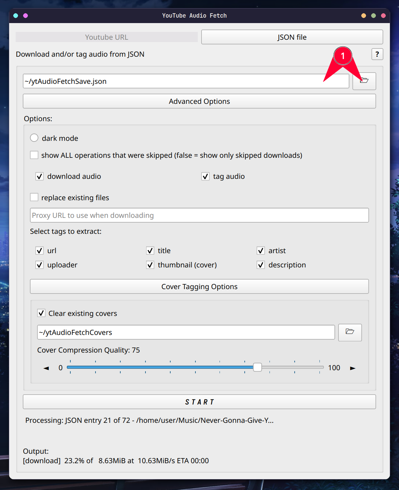

ytAudioFetch
Light yt-dlp GUI that fetches the audio from any YouTube playlist, video, or short while tagging it with any of the tags you can choose.
GitHub
|

|
Guide

- URL Mode - This is the main mode, it allows downloading any playlist's or video's audio.
- JSON Mode (More info below next image) - Using your own custom JSON file, you can put in your own tag data and have all the specified files be tagged.
- Help Button - Opens up this guide in your browser.
- Youtube URL to extract from - Non-private playlist or single videos (this includes shorts) are valid.
- Directory/Folder to save to - You can either manually type it or press the folder icon and browse to find it.
- Advanced options toggle - Hides and unhides advanced options.
- Dark Mode activator - Changes the theme to dark mode (see last image for previews).
- Verbose skip list - Normally, when the program is done processing, it shows a list of any videos/JSON entries whose downloads were skipped; turning this on will show all operations that were skipped, like skipped tags and skipped saves. This often makes the list much longer.
- Download operation[1] - Whether or not to download the audio file.
- Tag operation - Whether or not to tag the audio file with tags checked in 14-19.
- Save operation - Whether or not to save the tag data to a JSON file.
- Replacing files - Replace existing files with the same name, works by checking if a file has the format
YTAF-[id]-[title].mp3 (with the same ID and title). This means, if you change the file name, the original will not be replaced.
- Tag existing - Uses the same check as 12 to determine existing files. When turned off, skips tagging if the file already exists.
- *Youtube URL tag - Gets saved to the WOAS (sourceURL) ID3 tag.
- *Title tag[2] - Gets saved to the TIT2 (title) ID3 tag.
- *Artist tag[2] - Gets saved to the TPE1 (artist) ID3 tag.
- *Uploader tag - Gets saved to the TPUB (publisher) ID3 tag.
- *Thumbnail tag[1] - Gets saved to the APIC (picture) ID3 tag.
- *Description tag[1] - Gets saved to the COMM (comment) ID3 tag.
- *A comprehensive list of ID3 tags can be found with descriptions can be found here or, for a more concise list, here
- Compression slider[3] - Controls the compression quality when converting thumbnails to JPG to be tagged onto the MP3.
- Overwrite Save - Overwrite the tags saved in the entry for that file in the JSON file that is put in 22.
- Save file path - Where to save the JSON file. You can either manually type it or press the folder icon and browse to find it.
- Start button - Begin the script in the current mode.
- Status feed - Updates as the script runs; shows the current video being processed and, when finished, the list of skipped operations.
- Output feed - Updates as the script runs; shows the console output from the script.
- Note for 9, 19, and 191: Downloading videos or extracting thumbnails/descriptions requires the extractor to download the full webpage info, which can make fetching large playlists very slow. If all you want is to tag/save the other tags, turn off downloading, thumbnails, and descriptions for a much faster extraction.
- Note for 15 and 162: When the original YouTube title is in the form "this - that", it gets parsed as "artist - title", otherwise, the title is just the original title, and the artist is just the channel name. Also, if the artist is the channel name, it removes the "- Topic" suffix from autogenerated YouTube Music tracks.
- Note for 203: Qualities above 95 have diminishing returns and may lead to large files. Also, covers that already jpegs will not be converted or compressed

- JSON file to extract from - You can either manually type it or press the file icon and browse to find it.
- JSON files should be formatted like this:
{
"...": { },
"[file path to mp3]": {
"url": "[non-private youtube URL (playlist URLs don't work)]",
"title": "[track title]",
"artist": "[artist(s)]",
"uploader": "[uploader]",
"thumbnail": "[file path to image or raw link to image file]",
"description": "[description]"
},
"...": { }
}
Note: Not all tags are required to be included. However, only supported tags (see 14-19) will be added.